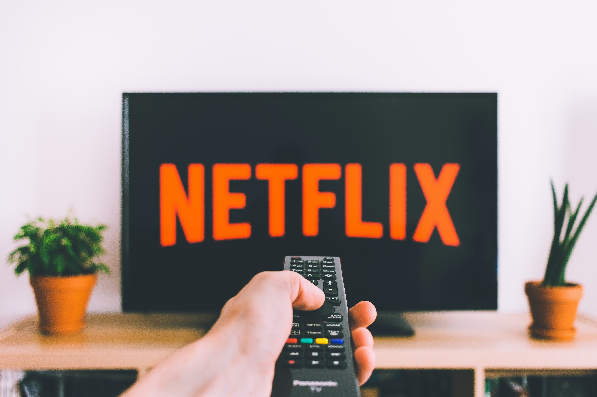

Pros
Reason 1
Streaming services such as Netflix, Apple TV, Stan and more provide audiences a platform to watch anticipated movies from the comfort of their homes without having to deal with an buying an expensive ticket before they sell out, getting the best seat or the worry of the troubles outside. Instead they can just either rent the movie online or buy a subscription to the streaming service for a small fee that cost less than a movie ticket.
Reason 2
Alongside following social distancing, moving to online streaming gives the services more attention and more of a chance to prove to be a worthy competitor to the theatres and allows customers more choice.
Reason 3
Moving big budget films to online services may also help smaller independent films get recognized as they are now all on the same platform and could get the same exposure.
Cons
Reason 1
Even though films are going digital studios are avoiding going to services that require a paid subscription. This is due to the studio not making any direct money from audiences individually watching the films. Instead of Netflix, Stan and the others, studios are now taking their movies on-demand allowing audiences to buy or rent the movie.
Reason 2
Recently the well-known academy that host the award ceremony, the Oscars, announced that digital released movies are now eligible to be nominated, although this may seem to be good news for smaller film makers, they explained that this will only include films who were originally scheduled for a theatrical release.
Reason 3
One problem online streaming services have is that they sometimes crash, and if a new wave of people jump online the servers may become unstable.
Reason 4
Audiences are also required to have a stable internet connection to have an ideal time when watching a film.